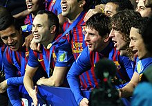

FC Barcelona
Fútbol Club Barcelona, (pengucapan bahasa Spanyol:[fubbɔl klub bəɾsəlonə]) juga dikenal sebagai Barcelona atau Barça,
adalah klub sepak bola profesional yang berbasis di Barcelona, Catalonia, Spanyol, yang ikut serta di kompetisi tertinggi sepak bola Spanyol, La Liga.
Didirikan pada tahun 1899 oleh sekelompok pemain Swiss, Inggris, Jerman dan Catalonia yang dipimpin oleh Joan Gamper, klub telah menjadi simbol budaya Catalonia dan Catalanisme,
yang mempunyai motto Més que un club
(Lebih dari sebuah klub). Tidak seperti banyak klub sepak bola lainnya, para pendukung memiliki dan mengoperasikan Barcelona.
Ia adalah klub sepak bola kedua terkaya di dunia dalam hal pendapatan, dengan omzet tahunan sebesar €560,8 juta dan kedua yang paling berharga, senilai $3,56 miliar.
Lagu kebangsaan resmi Barcelona adalah Cant del Barça
, yang ditulis oleh Jaume Picas dan Josep Maria Espinas. Secara tradisional, Barcelona mengenakan kostum merah dan biru, sehingga klub ini dijuluki Blaugrana.
Sejarah
FC Barcelona, didirikan pada tahun 1899 oleh Joan Gamper,
telah berkembang menjadi salah satu klub sepak bola paling sukses dan berpengaruh di dunia.
Sejak awal, klub ini telah menjadi simbol identitas dan kebanggaan Catalonia, yang tercermin dalam motto mereka,
Més que un club
(Lebih dari sekadar klub).
- Awal Berdiri dan Identitas Catalan: Sejak didirikan, Barcelona segera menjadi representasi penting dari identitas dan budaya Catalan.
- Prestasi Awal dan Kejayaan Awal: Pada tahun 1920-an, Barcelona meraih kesuksesan domestik dengan memenangkan berbagai gelar La Liga dan Copa del Rey.
- Masa Sulit dan Kebangkitan: Menghadapi tantangan besar selama Perang Saudara Spanyol dan era Franco, klub bangkit kembali pada tahun 1950-an dengan pemain seperti László Kubala.
- Era Johan Cruyff: Johan Cruyff membawa filosofi
Total Football
pada 1970-an, baik sebagai pemain maupun sebagai pelatih, dan meletakkan dasar bagi gaya bermain modern Barcelona.
- Dominasi Eropa: Pada 1990-an hingga 2000-an, di bawah manajemen pelatih seperti Cruyff dan Rijkaard, serta dengan pemain bintang seperti Ronaldinho dan Messi, Barcelona menikmati dominasi di kancah domestik dan Eropa.
- Era Guardiola dan Tiki-Taka: Pep Guardiola memperkenalkan gaya
tiki-taka
yang sukses membawa banyak gelar, termasuk dua Liga Champions pada tahun 2009 dan 2011.
- Kesuksesan Kontemporer: Di bawah manajer seperti Luis Enrique, Barcelona terus meraih trofi termasuk treble pada tahun 2015, dengan Lionel Messi sebagai pemain kunci.
- Simbol Politik dan Budaya: Barcelona memainkan peran penting dalam politik dan masyarakat Catalonia, terutama dalam mendukung otonomi daerah.
Pendukung
Julukan cules untuk pendukung Barcelona berasal dari cul Katalan (bahasa Inggris: ass), sebagai penonton di stadion pertama, Camp de la Industria, duduk dengan culs mereka atas berdiri.
di Spanyol, sekitar 25% dari populasi dikatakan Barca simpatisan, kedua di belakang Real Madrid, didukung oleh 32% dari populasi. Sepanjang Eropa, Barcelona adalah favorit klub pilihan kedua .
Jumlah keanggotaan klub ini telah melihat peningkatan yang signifikan dari 100.000 pada musim 2003-04 menjadi 170.000 pada bulan September 2009,
kenaikan tajam yang disebabkan oleh pengaruh Ronaldinho dan strategi media kemudian presiden Joan Laporta yang berfokus pada Spanyol dan Inggris media online.
Selain keanggotaan, per Juni 2010 ada 1.335 klub penggemar resmi terdaftar, disebut penyes, di seluruh dunia. Klub-klub penggemar mempromosikan Barcelona di wilayah mereka dan menerima penawaran bermanfaat ketika mengunjungi Barcelona. Klub ini telah memiliki banyak orang terkemuka di antara para pendukungnya, termasuk Paus Yohanes Paulus II, yang adalah anggota kehormatan, dan mantan perdana menteri Spanyol José Luis Rodríguez Zapatero. FC Barcelona memiliki kedua rata-rata kehadiran tertinggi klub sepak bola Eropa hanya di belakang Borussia Dortmund.
Rivalitas klub
El Classico
Dalam sebuah liga nasional di suatu negara, sering terdapat persaingan sengit antara dua tim terkuat, dan ini terutama terjadi di La Liga, di mana pertandingan antara Real Madrid dan Barcelona dikenal sebagai Pertemuan Klasik
(El Clásico). Sejak awal kompetisi nasional dimulai, kedua klub sering dipandang sebagai pencerminan/wakil dari dua daerah berbeda di Spanyol: Catalunya dan Castilla, serta dari dua kota. Persaingan ini mencerminkan berbagai hal, termasuk ketegangan politik dan budaya antara Catalunya dan Castilla yang merupakan gambaran umum dari Perang Saudara Spanyol.
Selama era kediktatoran Miguel Primo de Rivera dan terutama Francisco Franco (1939—1975), semua budaya regional ditekan. Semua bahasa daerah yang dipakai di wilayah Spanyol, kecuali bahasa Spanyol (Castilla), secara resmi dilarang. Simbolisasi keinginan rakyat untuk kebebasan Catalunya membuat Barcelona menjadi lebih dari sekadar klub sepak bola
(més que un club
) untuk masyarakat Catalan. Menurut Manuel Vázquez Montalbán, cara terbaik untuk orang Catalan untuk menunjukkan identitas mereka adalah dengan bergabung dengan Barcelona. Hal ini lebih kecil risikonya daripada bergabung dengan gerakan anti-Franco, dan memungkinkan mereka untuk mengekspresikan ketidakpuasan mereka.
Di sisi lain, Real Madrid secara luas dilihat sebagai perwujudan dari sentralisme berdaulat dan rezim fasis di tingkat manajemen dan di bawahnya. Santiago Bernabeu yang menjadi presiden klub merupakan seorang pejuang untuk los nacionales. Namun, selama Perang Saudara Spanyol, anggota kedua klub seperti Josep Sunyol (Barcelona) dan Rafael Sánchez Guerra (Real Madrid) menyerah di tangan para pendukung Franco.
Selama tahun 1950, persaingan tersebut memburuk saat ada kontroversi seputar transfer Alfredo Di Stéfano, yang akhirnya bermain untuk Real Madrid dan merupakan kunci kesuksesan mereka berikutnya. Pada era 1960-an, kedua klub kemudian bertemu pada Piala Champions lebih dari dua kali dan pada tahun 2002, pertemuan antara klub Eropa dijuluki sebagai Pertandingan Abad Ini
oleh media Spanyol, dan disaksikan oleh lebih dari 500 juta orang di seluruh dunia.
Prestasi

Berikut adalah beberapa prestasi utama FC Barcelona sepanjang sejarah mereka, yang menjadikan mereka salah satu klub paling sukses dan terkenal di dunia sepak bola:
Hingga Juni 2023, Barcelona telah memenangkan 27 La Liga, 31 Piala Raja Spanyol, 14 Piala Super Spanyol, 3 Copa Eva Duarte, 2 Copa de la Liga dan 2 Piala Latin serta menjadi pemegang rekor untuk empat kompetisi terakhir. Mereka juga telah memenangkan 5 Liga Champions UEFA, 4 Piala Winners UEFA, 5 Piala Super UEFA dan 3 Piala Dunia Antarklub FIFA. Mereka juga memenangkan rekor 3 Piala Fairs, dianggap pendahulu ke Piala UEFA/Liga Eropa.
Barcelona adalah satu-satunya klub Eropa telah memainkan sepak bola kontinental setiap musim sejak 1955, dan salah satu dari tiga klub tidak pernah terdegradasi dari La Liga, bersama dengan Athletic Bilbao dan Real Madrid. Pada tahun 2009, Barcelona menjadi klub pertama di Spanyol untuk memenangkan treble terdiri dari La Liga, Copa del Rey, dan Liga Champions. Pada tahun yang sama, juga menjadi klub sepak bola pertama yang memenangkan enam dari enam kompetisi dalam satu tahun, Malthus menyelesaikan sextuple itu, Terdiri treble tersebut dan Piala Super Spanyol, Piala Super UEFA dan Piala Dunia Antarklub FIFA.